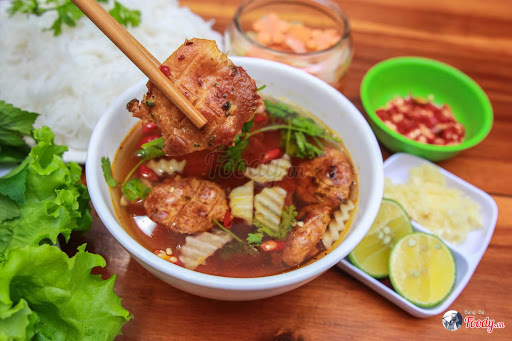
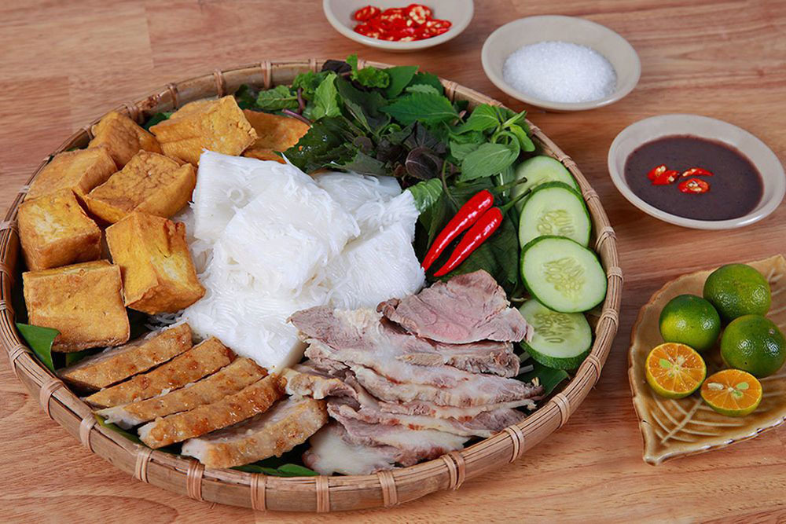

Phở là món quà đặc sản của Hà Nội, một nhà văn nổi tiếng của Việt Nam- Thạch Lam từng viết như vậy hồi thập
niên 1940. "Phở là một thứ quà đặc biệt của Hà Nội, không phải chỉ riêng Hà Nội mới có, nhưng chính là vì
chỉ ở Hà Nội mới ngon".... Phở ngon phải là phở "cổ điển", nấu bằng
thịt bò,"nước dùng trong và ngọt, bánh dẻo
mà không nát, thịt mỡ gầu giòn chứ không dai, chanh ớt với hành tây đủ cả", "rau thơm tươi, hồ tiêu bắc,
giọt chanh cốm gắt, lại điểm thêm một ít cà cuống, thoảng nhẹ như một nghi ngờ". (tản văn Hà Nội băm sáu
phố
phường) More information at: https://dulichvietnam.com.vn/nhung-cam-nhan-ve-to-pho-viet.html
Top 2: "Bún chả"

Không có một mốc chính xác để ghi lại lịch sử ra đời của bún chả, cũng chưa biết món ăn này được sáng tạo bởi
ai. Chỉ biết rất lâu rồi, từ thế hệ này sang thế hệ khác của người Hà Nội vẫn quen thuộc với bún chả và coi
đây là một món ăn không thể thiếu trong đời sống ẩm thực thường ngày. ...Bún chả bao gồm 3 phần chính là nước chấm, chả nướng và bún. Một suất bún chả có ngon hay
không được quyết
định phần lớn bởi nước chấm. Nước chấm bún chả được pha đầy đủ chua, cay, mặn, ngọt với mắm, giấm,
đường,
tỏi, ớt cùng lượng phù hợp tùy vào người pha chế, trong bát nước chấm luôn có thêm nộm gồm đu đủ xanh,
cà
rốt hay nhiều nơi có cả giá đỗ. More information at: https://dantocmiennui.vn/bun-cha-net-am-thuc-tinh-te-cua-dat-kinh-ky/169920.html
Top 3: "Bún đậu"

Bún đậu mắm tôm – ngay từ cái tên đã dễ dàng cho du khách biết được sự kết hợp hài hòa giữa bún đậu và mắm
tôm, những món ăn nghe tên đã thấy giản dị, gần gũi với cuộc sống của người dân Hà Nội. ...Du khách sẽ thấy một
“mẹt” bún đậu mắm tôm bao gồm rất nhiều những thức ăn kèm: Đậu phụ rán vàng, thịt chân giò, nem rán,
dồi,
lòng lợn và đặc sản “Chả Cốm” của Hà Nội nữa. Chỉ cần thưởng thức một suất bún đậu như vậy thôi, du
khách đã
cảm thấy mình sẽ có một bữa ăn ngon, rẻ và no nê rồi. More information at: https://www.vntrip.vn/cam-nang/bun-dau-mam-tom-29577
Top 4: "Bún riêu"
Bún riêu cua là món ăn dân dã, có vị chua thanh, ăn mùa hè rất mát nên được nhiều người ưa thích, kể cả khách
du lịch nước ngoài.... Có nhiều hàng bán bún riêu trên các đường
phố từ Nam tới Bắc, mỗi nơi một hương vị riêng
đọng lại từ cảm nhận của thực khách. Nhưng bún riêu cua ở Sài Gòn vẫn mang nét đặc trưng, không lẫn vào
đâu
được bởi nó là sự tổng hòa hương vị của nhiều nơi More information at: https://vnexpress.net/bun-rieu-cua-mon-dan-da-o-duong-pho-sai-gon-3394549.html
And many more delicious food in Viet Nam are waiting for you
ABOUT
Author of the website: Đoàn Trung Nghĩa
"I'm come from Ha Noi in VietNam,I will try my best to bring the best website for you!"
This website was created to show you about Vietnamese traditional foods